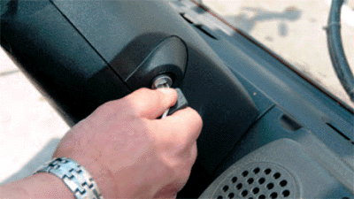
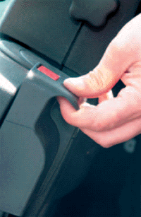
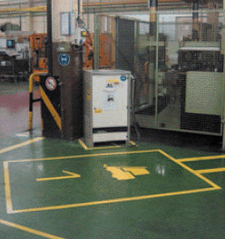

Ein Unfallschwerpunkt beim Betrieb von Gabelstaplern ist das falsche Absteigen. Häufig springen Fahrer vom Fahrzeug und ziehen sich dabei Verletzungen des Bewegungsapparates zu, z. B. Umknicken oder Zerrungen. Diese Art von Unfällen ist zu vermeiden, wenn zum Auf- und Absteigen die am Fahrzeug vorhandenen Trittflächen und Haltegriffe verwendet werden.
Nur vom Unternehmer beauftragte Personen dürfen den Gabelstapler fahren. Sie müssen verhindern, dass ihr Gabelstapler unbefugt benutzt wird. Dazu genügt in der Regel, wenn der Antrieb stillgesetzt und der Schlüssel abgezogen ist.
Der Fahrer besitzt die Schlüsselgewalt über den Gabelstapler. Er trägt auch die Verantwortung dafür, dass ihn niemand unbefugt benutzt (Bild 7-1).
Sofern mehrere Fahrer denselben Gabelstapler benutzen müssen, sollte jeder Fahrer einen eigenen, besonders gekenzeichneten Schlüssel haben oder ein Codiersystem (Chipkarten) eingesetzt werden.

Sofern sich der Fahrer in unmittelbarer Nähe des Gabelstaplers aufhält, kann bei kurzzeitigem Verlassen des Gabelstaplers der Schlüssel im Schalt- oder Anlassschloss stecken bleiben. Ein kurzzeitiges Verlassen des Fahrerplatzes kann z. B. zum Kuppeln von Anhängern oder zu Kommissioniertätigkeiten nötig sein.
Der Fahrer hält sich nur dann in unmittelbarer Nähe des Gabelstaplers auf, wenn er bei Störungen oder dem Versuch einer unbefugten Benutzung sofort eingreifen kann.
Der Gabelstapler muss gegen unbeabsichtigtes Bewegen gesichert sein, bevor der Fahrer vom Fahrersitz absteigt.
Durch Betätigung der Feststellbremse wird der Gabelstapler gegen unbeabsichtigtes Wegrollen gesichert (Bild 7-2). Am Berg werden zusätzlich Vorlegeklötze verwendet.

Gabelstapler dürfen nur an dem dafür vorgesehenen Platz abgestellt werden (Bild 7-3). Bei kurzen Arbeitspausen sind Gabelstapler so zu parken, dass andere Verkehrsteilnehmer oder Mitarbeiter nicht behindert werden.
Merkregeln:
